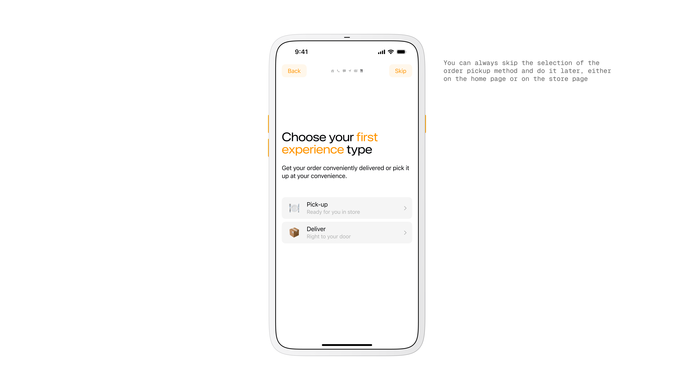
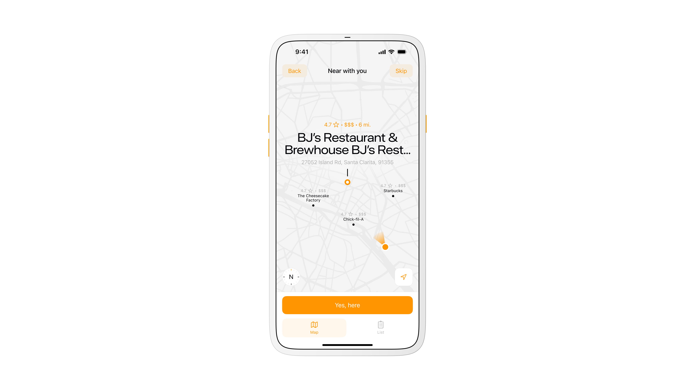
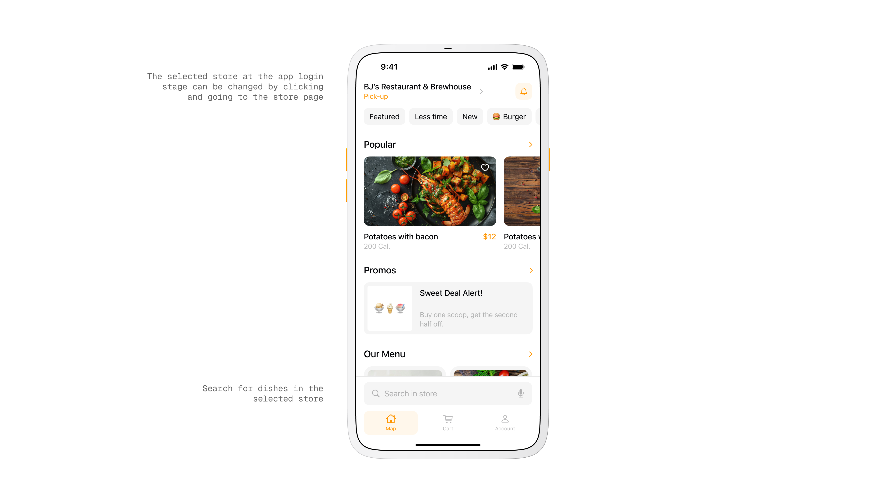
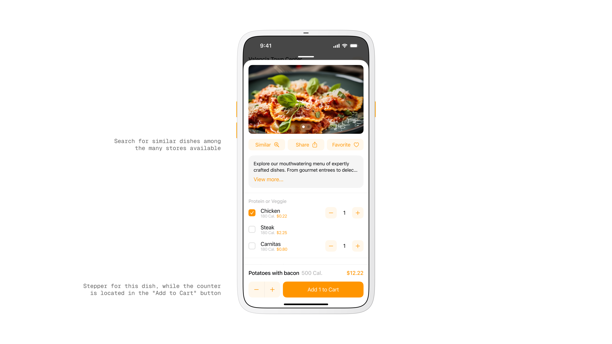
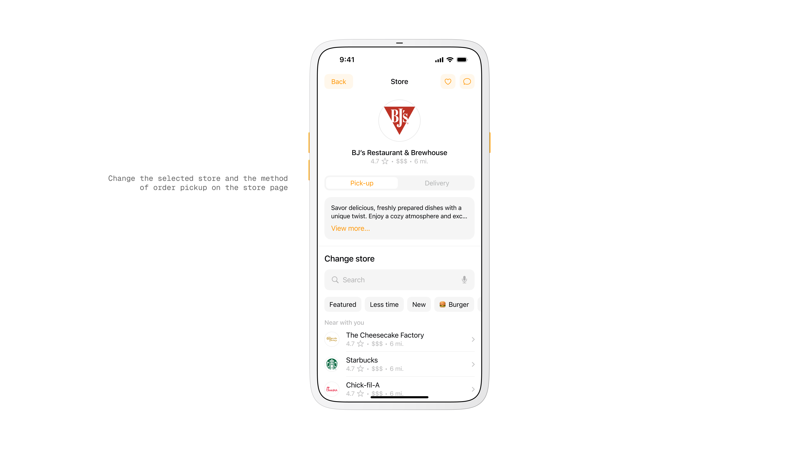
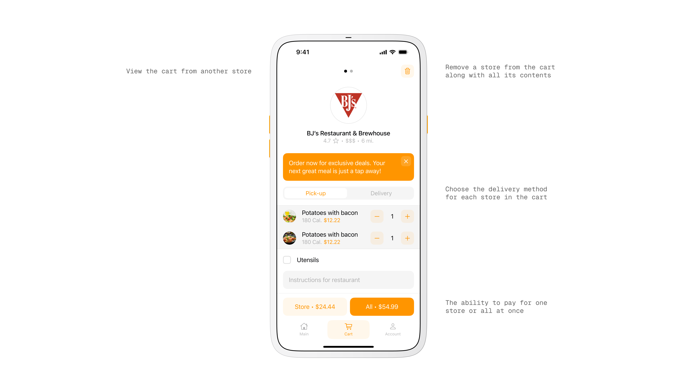
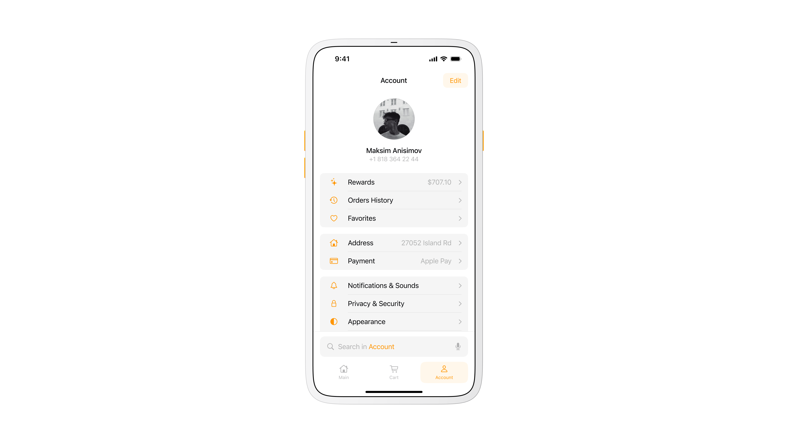
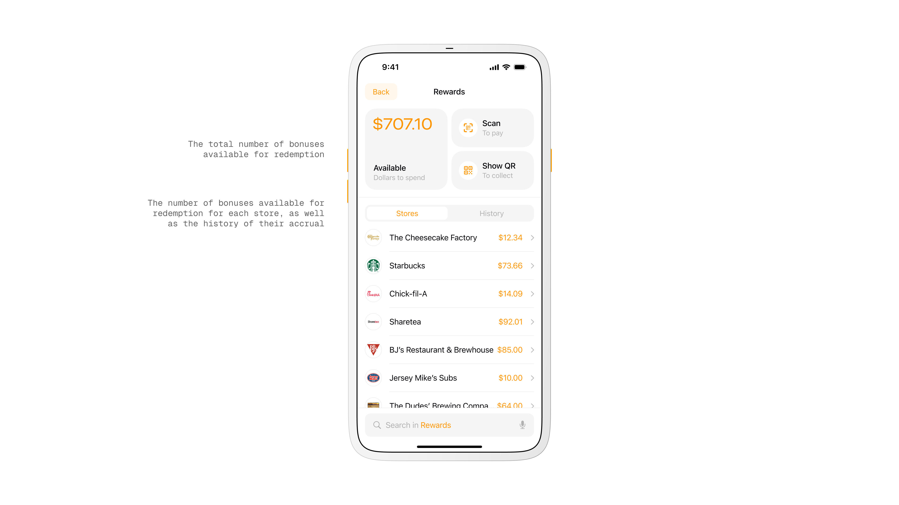
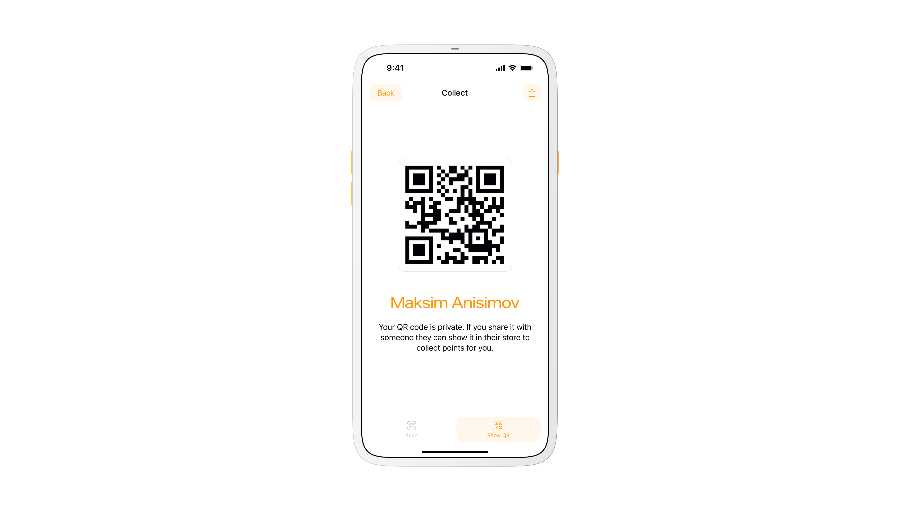
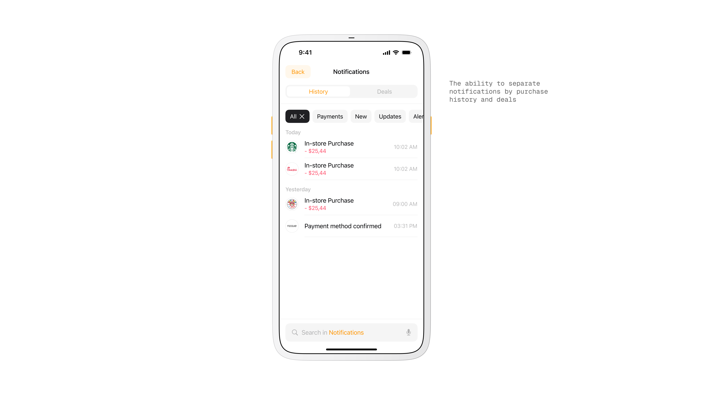

How I Transformed Restaurant Ordering with a User-Centric Mobile App.
Noque. Mar 24.
Engineered an innovative mobile app simplifying restaurant interactions through streamlined ordering and efficient pickup.

With Noque, I reshaped restaurant customer interactions by creating an app that eliminates queues, simplifies ordering, and optimizes pickup processes.
Store Selection.
On launch the app opens to nearby restaurants. A map view helps you spot the closest options, while a list view with search and a distance filter narrows results to a comfortable radius. This shortens the time from open to order.

Onboarding screen.

Store selection.

Map view for nearby restaurants.
Problem.
Ordering food is slower than it should be. Lines at cafes, scattered loyalty apps, and long menus make quick decisions hard.
I wanted a way to walk in, pick up my order, and leave without waiting or juggling multiple apps.
Goal.
Build a single mobile marketplace that lets people browse nearby spots, order fast, and collect rewards in one place.
Keep the flow light for customers and affordable for small restaurants that cannot build their own app.
Key Concept.
Two ways to receive an order. Pickup and delivery, with pickup as the core idea. Pickup cuts fees, removes courier delays, and lets restaurants nudge in-person visits with special offers.
Main Page.
The restaurant menu is front and center with a quick switch for delivery method.
A bottom tab bar with integrated search keeps frequent actions reachable and leaves content in focus, which helped usability on larger screens.

Home screen with restaurant overview.
Product View.
Each item card shows actions and results in one place. After customizing, you see name, quantity, calories, and total price at a glance. There is also a shortcut to find similar dishes to widen choice without leaving the flow.

Product screen.

Restaurant selection screen.
Research and Observation.
I watched how people order in food courts and coffee shops. Decision fatigue and slow queues were the constant.
I benchmarked large marketplaces and mapped the gaps that matter for quick pickup, simple customization, and loyalty that feels personal.
My Role.
I originated the idea, led the concept, and acted as product designer and art director.
I coordinated with developers, an analyst, and sales, moved from sketches to prototypes, and refined through testing and feedback until the flow felt instant and clear.
Cart.
Items are grouped by restaurant so mixed orders stay clear. You can add cutlery, remove items, or clear a group in one step. This reduced confusion when people ordered from more than one place.

Cart and checkout screen.
Workflow.
Discovery and market research fed into iterative prototyping. I combined familiar marketplace patterns with the specific needs of pickup.
The result was an interface optimized for quick decisions and minimal friction.
Target Audience.
Students, singles, couples, and office workers who order to save time or avoid cooking. Most are 18 to 45 with average or above average income and clear needs around speed, value, and convenience.

User account overview.
Rewards.
Loyalty points are collected per restaurant rather than one generic system. Owners can create their own offers and customers feel real value when they return to a favorite spot.

Rewards screen.

QR code for collecting points.
Key Screens.
Store selection on a map or list, restaurant menu with quick method switch, product card with instant totals, a grouped cart, and a loyalty area tied to each venue. These screens formed the happy path from first open to paid order.
Design and System.
I built a token based design system with components that scale across 34 plus screens. The dark theme was designed in parallel to keep parity from the start.
What's Next.
Add richer delivery tracking, better courier routing, and a restaurant console for order management, analytics, and personalized promotions. These steps round out the marketplace and keep operations efficient.
Takeaway.
Noque started as a workaround. It became a practice in restraint. The project changed the way I think about time. Not just loading time or pickup time, but time as a design constraint.
More in Projects.
Developed intuitive digital cockpits integrating real-time data visualization, driver-centric design, and responsive interfaces.
Crafted native-style widgets for car controls, bringing Apple's clarity and consistency into everyday driving.
Designed a vibrant digital music experience tailored specifically to the dynamic preferences of new generation.
Built a versatile no-code tool empowering designers to rapidly prototype and share UI components and full websites.
Established a minimalist stationery brand that seamlessly blends functional design and engaging digital storytelling.
More in Nuggets.
More in Readings.
A reflection on how Apple Maps uses voice intonation to manage your emotional state while driving, and why Google Maps and Waze don't.
A reflection on finally owning the Pebble 2 Duo, a tiny comeback story about detail, nostalgia, and honest design.
A short manifesto for what Readings is, how I use it, and how to read it.
Copyright Maksim Anisimov.